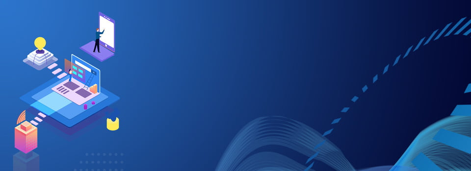

Abstract
University management system project is a web-based solution for colleges, universities, and schools. It
was created for the university and its affiliated institutions to conduct, monitor, and analyze
complicated activities such as student admission, examinations, and much more. It is a program that
manages the complete student life cycle up to degree completion.
IUMS helps make important tasks like admission, results processing, registration, and fee management
more efficient, so they can be done faster. All users, including students, college and university
personnel, paper valuers, setters, and moderators, are given a role-based login/password to complete
their tasks. Each student has access to an online tool through the university’s examination management
system to complete the following Student Lifecycle tasks. This is available to all students.
" In some ways, programming is like painting. You start with a blank canvas and
certain basic raw
materials. You use a combination of science, art, and craft to determine what to do with them.
" -
Andrew Hunt
Effect
Educational institutes are the laying foundation of knowledge, with which students are being fed with the
proper education. It’s compulsory to have the best set up for it, to work in the way it should be, and pass
across relevant information to students. To function accordingly, it should have a proper management system
in place. This management system is known as online student management which is available in Education ERP /
University ERP which makes things digitally organized.
SaaS-based Education ERP has successfully reduced several tasks of educators and admin staff. Student
Management System is a module that manages several details about students starting from admission to
convocation and up to alumni management.
This module is able to keep a track record of student’s admission details, timetable management, examination
management, discussion board, extracurricular activities, fees management can be scheduled efficiently
reducing manual work.
Technical Aspects
Technical Feasibility centers onthe existing computer system hardware, software, etc. and tosome extent how
it can supportthe proposed addition. Thisinvolves financialconsiderations to accommoda tetechnical
enhancements.Technical support is also areason for the success of the project. The techniques neededfor the
system should beavailable and it must bereasonable to use. TechnicalFeasibility is mainly concernedwith the
study of function, performance, and constraintsthat may affect the ability toachieve the system.
Byconducting an efficienttechnical feasibility we need toensure that the project works tosolve the existing
problem area.
Since the project is designed with HTML, CSS and JAVA Script as Front end and SQL Server as Back end, it is
easy to installing all the systems whereverneeded. It is more efficient,easy and user-friendly tounderstand
by almost everyone.Huge amount of data can behandled efficiently using SQLServer as back end. Hence this
project has good technical feasibility
Relationship To Data
In a University , there are several departments and each department has a head of department who belongs to
Faculty. Department have a name , phone extension , specific mailing address and Students that belong to the
department. Students can belong to only one Department at a time and Department can have more than one or no
Student
Students and faculty have names and unique identification numbers , with address , age , gender and other
information. Student studies different Courses offered by University . Faculty teaches these Courses . In
each semester one student can take more than one course and Faculty can teach more than one courses .
Faculty members can teach in multiple Departments. Each course can be taught by many faculty members or no
one
Faculty members are also working on multiple research projects. These projects are funded by government and
university. One project can have more than one faculty member and one faculty member can work on more than
one project